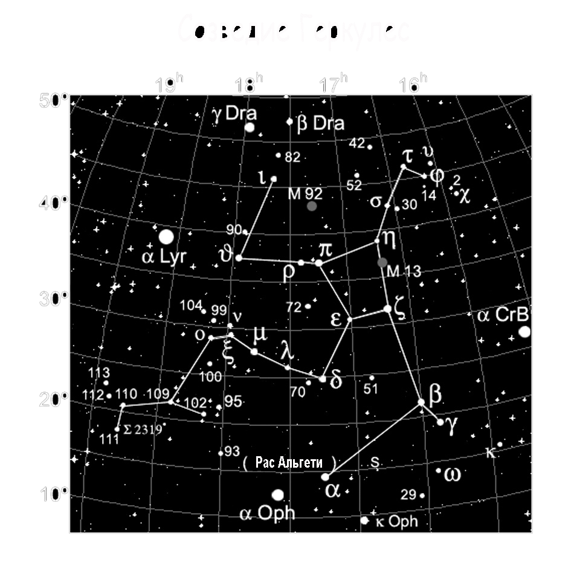

|  |
Где и как наблюдать созвездие геркулесГде и как наблюдать созвездие геркулес Узнаваемым делает его характерная, наиболее заметная часть, — т. н. Краеугольный Камень — трапеция, образованная четырьмя звездами ε, ζ, η, π. Чаще всего эту фигуру вписывают в торс титана. Оно наблюдается во всем Северном, и части Южного полушарии, и для средних Северных широт является частично незаходящим, т. е. в момент нижней кульминации скрывается за горизонтом лишь частично. Созвездие занимает порядка 1225,1 квадратных градусов и содержит более двух сотен, видимых невооруженным глазом звезд. Стоит отметить, что в Геркулесе находится апекс Солнца — точка, в которую стремится вектор скорости нашего дневного светила. |